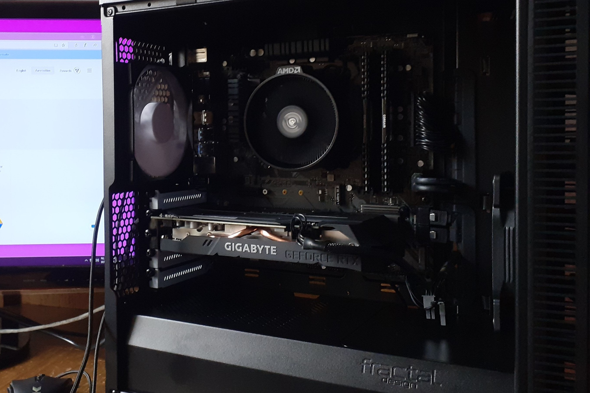
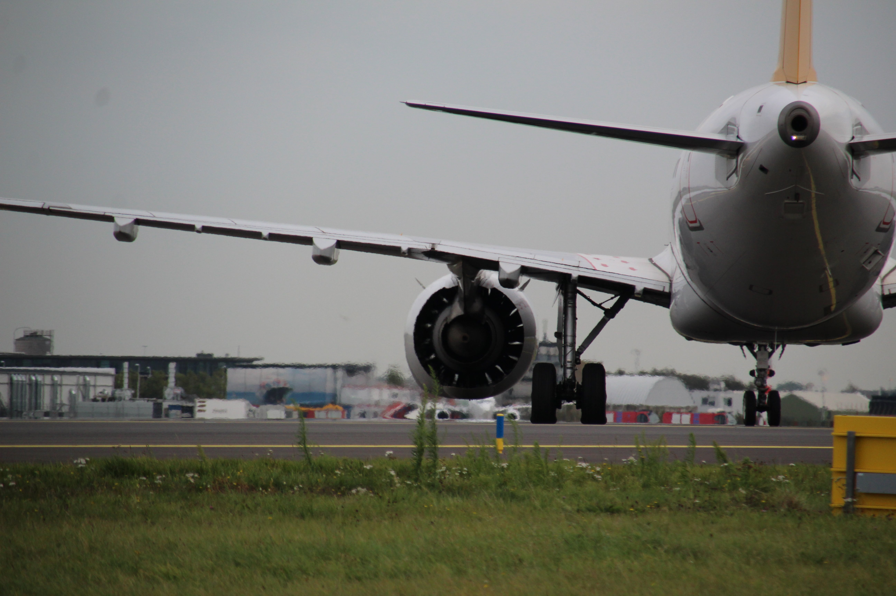
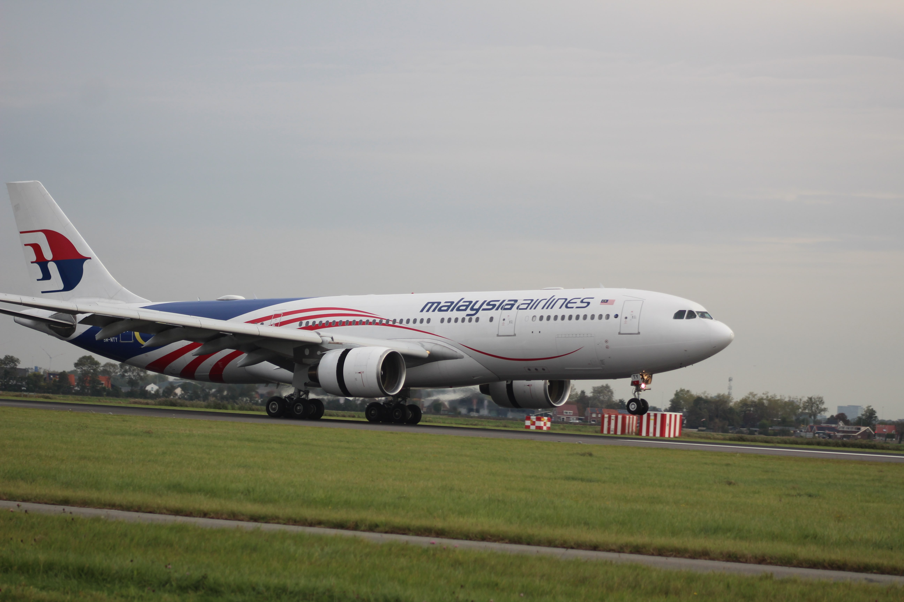
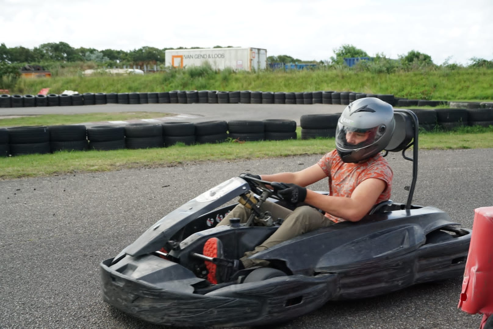
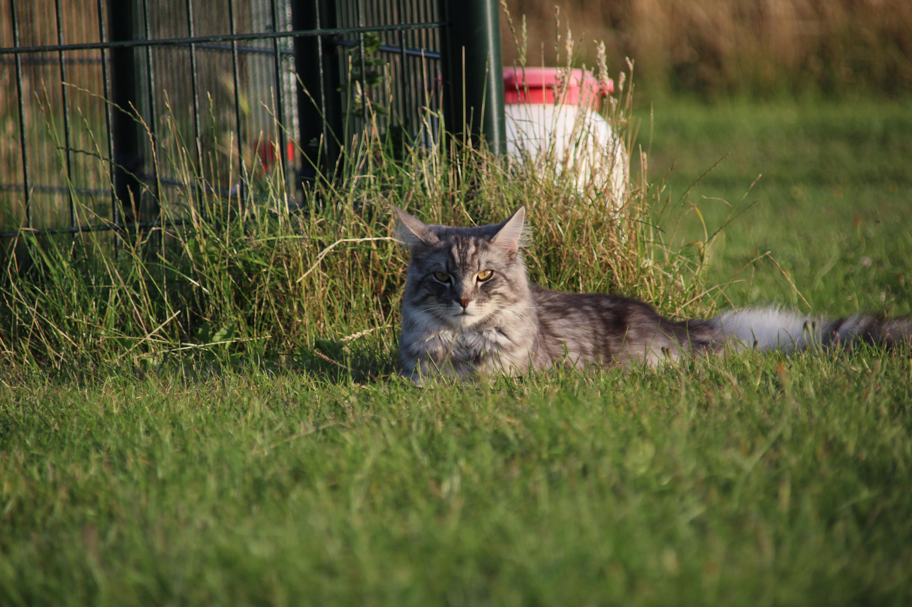
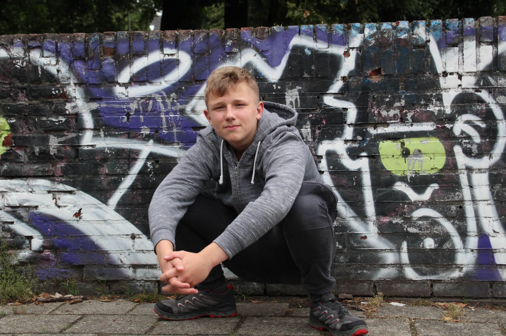
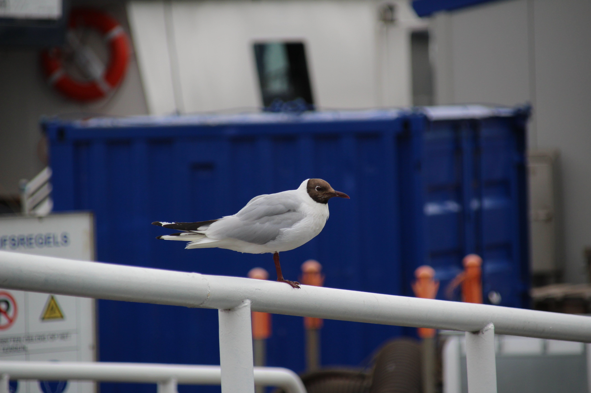

Programeertalen die ik nu kan, of mee bezig ben:
School
- Softwaredevelopment, MBO niveau 4, Deltion college, Zwolle
- In semester 1 afgerond:
- Netwerkbeheer
- IT projects
- IT Services
- Datacommunicatie
- Vakken in semsester 2:
- PHP
- CSP
- UX
- C#
- Projectmanagement
- Farel college Amersfoort, Havo 4:
- Vakkenpakket CM
-
Studie niet afgemaakt vanwege 2 slechte jaren met corona, Ik zou het jaar niet meer gaan halen.
Ik kon niet meer met de VMBO examens meedoen, aangezien die al begonnen waren, dus ik koos om een studie te gaan doen die mij veel intereseerde.
Werkervaring
2017 - 2019: Krantenwijkje
2019 - 2020: Schoonmaken in de bakkerij
2020 - heden: Vissafdeling bij Sligro
Kennis van Tech
Ervaring met besturingssystemen:
- Windows XP / 7 T/M 11
- Android
- Klein beetje Linux, vooral Ubuntu.
Ervaring met hardware:
- 2 computers gebouwt
- 2 computers oude in en uit elkaar gehaald vanwege defecten (daarna opgelost)
 |
 |
Spreektalen die ik beheers
| Taal | Spreken | Schrijven | Lezen |
| Nederlands | Moedertaal | Moedertaal | Moedertaal |
| Engels | Uitstekend | Uitstekend | Uitstekend |
| Duits | Slecht | Slecht | Prima |
| Spaans | Erg slecht | Erg slecht | Slecht |
| Russisch | Niet | Erg slecht | Erg slecht |
| Frans | Niet | Niet | Erg slecht |
Hobby's
Mijn hobby's zijn, Programeren, PC Bouwen, Gamen, Autorijden, Karten, Tennis, Fotografie en Vliegtuigspotten.|  |  |  |
|  |  |  |